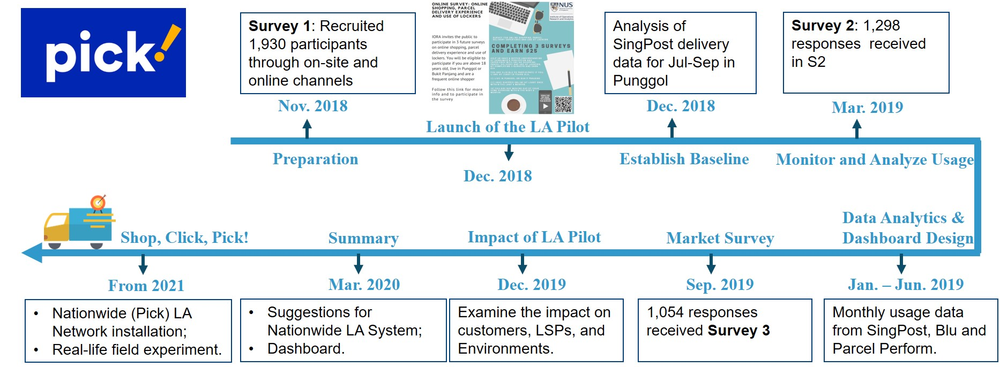
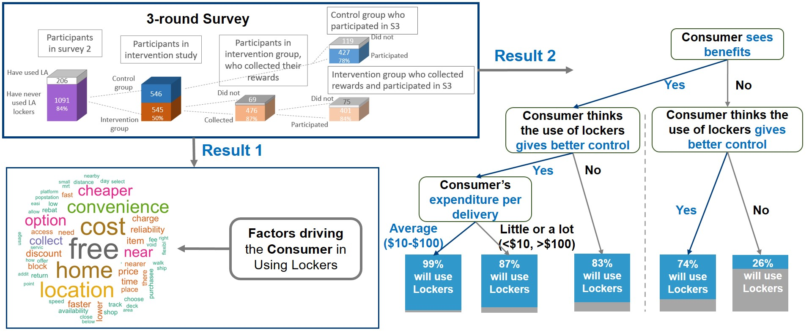
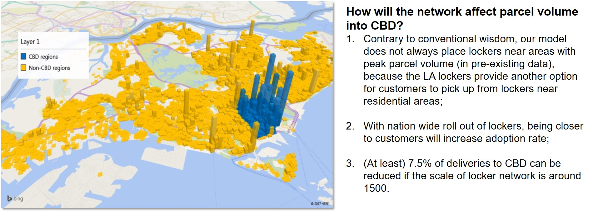

Ph.D. in Management
National University of Singapore
Research Affiliate
Research Fellow
Institute of OR and Analytics (NUS)
Social
Email
Scholar
ORCID
GitHub
Contact:
Institute of OR and Analytics
Innovation 4.0, 3 Research Link
Singapore 117602
Research Topic
This project aims to provide a thorough understanding of the background that preceded the launch of Pick and how certain policies could strengthen the nationwide launch of the parcel locker network. Apart from a collection of nation-wide parcel delivery dataset, we conduct a three-round consumer survey to investigate the locker usage behavior. Furthermore, we use prescriptive analytics to study the operational issues associated with locker installation, carrier parcel delivery efficiency, and customer adoption.
Research Progress
Timeline of the locker pilot program

Research Output
Federated LA Network: Customer Adoption
“Chance of Using Lockers Increases When Customers see Benefits”

Federated LA Network: Sustainability
“Installation of locker near public housing block reduces the volume of parcel delivery to CBD”
